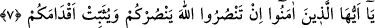
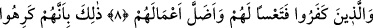
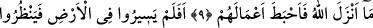
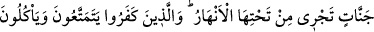
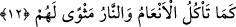

EĞER SİZ ALLAH’A
YARDIM EDERSENİZ
7. Ey îman edenler! Eğer siz Allah(ın dînin)e yardım ederseniz (Allah da) size
yardım eder; ayaklarınızı (hakkı koruma yolunda) sağlam tutar.
8. İnkâr edenler(e gelince): Yıkım onlara! (Allah) Onların işlerini boşa
çıkarmıştır.
9. Böyledir, çünkü onlar, Allah’ın indirdiğinden hoşlanmamışlar, Allah da onların
amellerini heder etmiştir.
10. (Onlar) yeryüzünde gezip dolaşmadılar mı ki kendilerinden öncekilerin
sonunun nasıl olduğunu görsünler? Allah onları(n evlerini, barklarını) yıkıp
başlarına geçirmiştir. Bu kâfirlere de, onun benzeri sonuçlar vardır.
11. Bu böyledir, çünkü Allah inananların koruyucusudur. Kâfirlerin ise
koruyucuları yoktur.
12. Allah, inanıp iyi işler yapanları, altlarından ırmaklar akan cennetlere sokar.
İnkâr edenler ise dünyâda biraz yaşarlar, hayvanların yediği gibi yerler, (sonunda)
yerleri ateştir.
“Ey îman edenler! Eğer siz Allah(ın dînin)e” ve Resûl’üne “yardım ederseniz
(Allah da)” düşmanlarınıza karşı “size yardım eder” ve fetihler ihsan eder.
“Ayaklarınızı” harp meydanlarında ve İslâm yolunda “sağlam tutar.”
Bilesin ki yardım iki şekildedir. Birincisi kulun yardımıdır. Bu da dinin delillerini
açıklamak, bu konuda şüphesi olan anlayışı kıt insanların şüphelerini ortadan kaldırmak,
dinin ahkâmını, farzlarını, sünnetlerini, helâlini, haramını açıklamak ve bunlarla amel